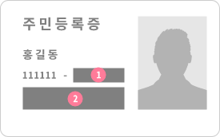

<div class="sub join" id="idGuidePage">
    <div class="container">
        <div class="join-head">
            <button type="button" class="btn-back" onclick="history.back()"></button>
            <h1>프로필 사진 등록</h1>
            <div class="progress-bar">
                <span style="width: 60%;"></span>
            </div>
        </div>
        <div class="guide-id-wrap mt25">
            <h2 class=" mb40">
                신분증은<br/>
                본인 확인 용도로만 사용합니다.<br/><br/>

                <p>가입 후 본인 확인후에 <span class="color-ff7600">폐기처리</span>합니다.</p>
            </h2>
            
            <ul>
                <li><span class="num">1</span>주민번호 뒷자리는 가려주세요!</li>
                <li><span class="num">2</span>주민등록증 주소도 가려주세요!</li>
            </ul>
        </div>
    </div>
</div>

